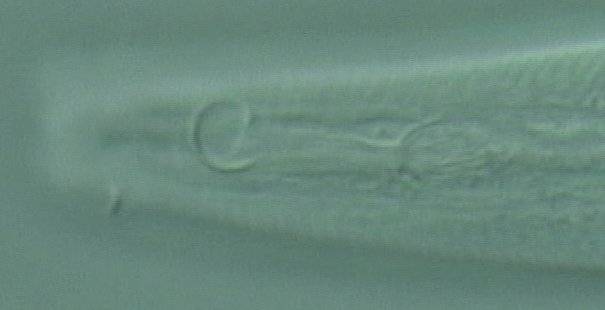
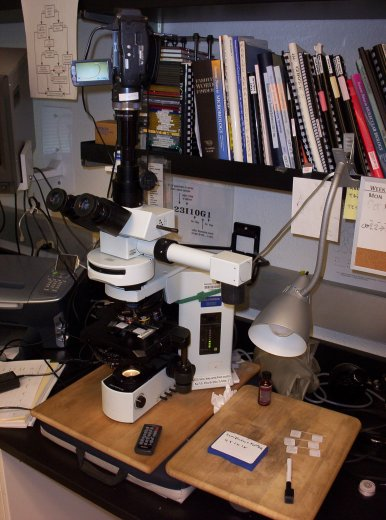

|  |
|
|  |
|
Detailed list of parts:
Combined cost is approximately US$32,000. Optical and camera components
are independent of whether you use Mac or PC. All brand names mentioned are
registered trademarks of the respective companies listed
here.
I. Optics
II. High Definition Video camera recorder
III. Computer hardware
IV. Computer software